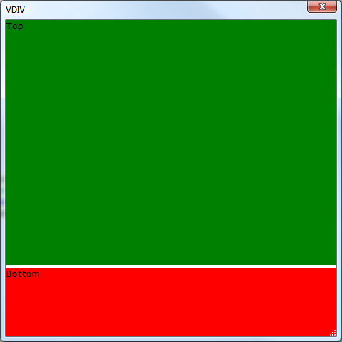

HtmlHost Example 2: Vertical Sizer
A vertical sizer can be created in an htmlhost area by adding a div that has the following attributes defined:1) a5:target - attribute that describes the type of target, which can be either vsizer or hsizer.
2) a5:target_elem - attribute that specifies the ID of the element we want to resize as a result of dragging the sizer.
3) a5:target_adjust - direction to adjust size by (- means make SMALLER as you drag the slider down for vsizer or right for hsizer, + means make BIGGER as you drag the slider down or right). If the element is under (for vsizer) or to the right (for hsizer) then you will want to use '-'.
dim html as c = <<%html%
<html>
<head>
<style>
<!--
.vsizer {
background-color:ThreeDHighlight;
behavior:clickable;
cursor:n-resize;
height:4px;
width:100%%;
}
-->
</style>
</head>
<body id="body">
<div id="top" style="width:100%;min-height:1in;height:100%%;background-color:green;">Top</div>
<div class="vsizer" style="width:100%;" a5:target="vsizer" id="vsizer"
a5:target_elem="bottom" a5:target_adjust="-" ></div>
<div id="bottom" style="width:100%;height:1in;background-color:red;">Bottom</div>
</body>
</html>
%html%
ui_dlg_box("VDIV",<<%dlg%
{size=width=5in;height=5in}
{stretch=width,height}
{htmlhost=html};
%dlg%)